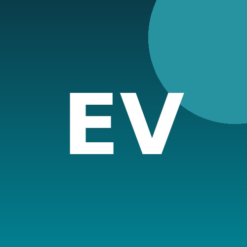
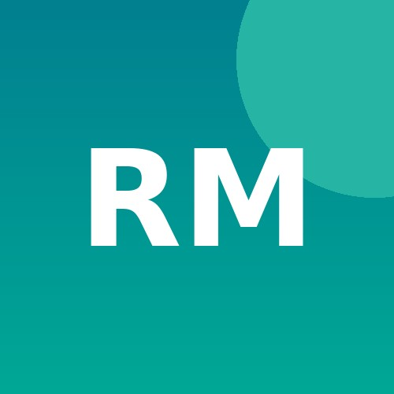

People
Faculty Lead

Dr. Elena Vasquez
Faculty Lead
Works on accountable content moderation and human-centred evaluation.
PhD Students

Rohan Mehta
PhD Student
Researches cross-lingual toxicity detection in low-resource settings.
Amara Chukwu
PhD Student
Studies trust erosion from AI-generated content in online communities.